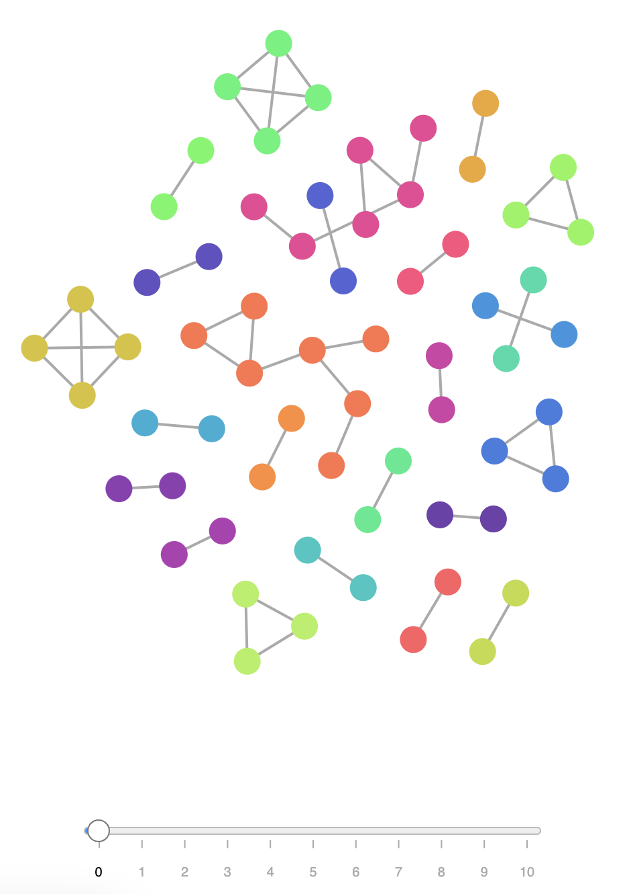

Tassinari Luca
MA
import, package, …)Prima dell’analisi
package org.examples;
import java.util.Arrays;
/**
* This is a sample class to demonstrate the tokenization process.
*/
public class Main {
public static void main(String[] args) {
if (args.length > 0) {
System.out.println("Program arguments: " + Arrays.toString(args));
} else {
System.out.println("Hello world from Java!");
}
}
}
Dopo la tokenizzazione
[class-interface-decl (line=8, column=1),
method-decl (line=9, column=5),
parameter (line=9, column=29),
block-stmt (line=9, column=44),
if-stmt (line=10, column=9),
binary-expr (line=10, column=13),
field-access-expr (line=10, column=13),
name-expr (line=10, column=13),
literal-expr (line=10, column=27),
block-stmt (line=10, column=30),
expression-stmt (line=11, column=13),
method-call-expr (line=11, column=13),
field-access-expr (line=11, column=13),
name-expr (line=11, column=13),
binary-expr (line=11, column=32),
literal-expr (line=11, column=32),
method-call-expr (line=11, column=56),
name-expr (line=11, column=56),
name-expr (line=11, column=72),
block-stmt (line=12, column=16),
expression-stmt (line=13, column=13),
method-call-expr (line=13, column=13),
field-access-expr (line=13, column=13),
name-expr (line=13, column=13),
literal-expr (line=13, column=32)]
Data una coppia di sorgenti $A$ e $B$:
$$ \text{max_sim_s}(A, B) = \frac{\sum_{match \in tiles} length}{min(|A|,|B|)} $$
⚠️
$|A|=30, |B|=150, \sum_{match \in tiles} length = 30$
$\Rightarrow \text{max_sim_s(A,B)}=1$
Data una coppia di sorgenti $A$ e $B$:
$$ \text{avg_sim_s}(A, B) = \frac{2 \cdot \sum_{match \in tiles} length}{|A|+|B|} $$
✅ $|A|=30, |B|=150, \sum_{match \in tiles} length = 30 \Rightarrow \text{avg_sim_s(A,B)}=0.33$
$\hspace{1cm}$
⚠️
$|A|=|B|=30, \sum_{match \in tiles} length = 25 \Rightarrow \text{avg_sim_s(A,B)}=0.83$ $|A|=|B|=1000, \sum_{match \in tiles} length = 400 \Rightarrow \text{avg_sim_s(A,B)}=0.4$
La similarità tra due progetti, $A$ e $B$, è data da:
$$ sim_p(A, B) = max \biggl( \frac{|\text{reported sources of A}|}{|\text{sources of A}|}, \frac{|\text{reported sources of B|}}{|\text{sources of B}|} \biggl) $$
$$ \cdot P_{75}(\text{similarity of reported sources}) $$
dove $P_{75}$ è il 75° percentile (o 3° quartile) delle similarità dei sorgenti segnalati.
disponibile al link git@github.com:DanySK/code-plagiarism-detector/
min-tokens)min-duplication $\in [0, 1]$)threshold-filter $\in [0, 1]$)Pair.java)******************************************************************
Report from plagiarism detector tool generated at 2022-11-13T17...
******************************************************************
Submitted Project: 7d79ff
+++++++++++++++++++++++++++++ SUMMARY ++++++++++++++++++++++++++++
Compared with 354 repositories.
------------------------------------------------------------------
|compared with |similarity|
------------------------------------------------------------------
|ac8a48 | 0.81|
|929c18 | 0.10|
|2b58aa | 0.08|
| ... |
------------------------------------------------------------------
++++++++++++++++++++++++++++++++++++++++++++++++++++++++++++++++++
> Matches found with ac8a48
...
>> With similarity: 0.8655737704918033
>>>>>>>>>>>>>>>>>>>>>>>>>>>>>>>>>>>>>>>>>>>>>>>>>>>>>>>>>>>>>>>>>>>>>>>>>>>>>>>>>>>>>>>>>>>>>>>>>>>>>>>>>>>>>>>>>>>>>>>>>>>>>
[7d79ff/src/main/java/*/ShotManagerImpl.java]
this.zombieModel.getZombies().stream()
.filter(z -> Collision.isColliding(s.getBoundingBox(), z.getBoundingBox()))
.forEach(z -> {
this.zombieModel.hitZombie(z, s.getDamage());
delete.add(s);
});
if(!delete.contains(s) && this.walls.stream().anyMatch(w -> Collision.isColliding(w, s.getBoundingBox()))) {
delete.add(s);
}
});
this.ended.addAll(delete);
delete.forEach(s -> this.shotsActive.remove(s));
}
...
>>>>>>>>>>>>>>>>>>>>>>>>>>>>>>>>>>>>>>>>>>>>>>>>>>>>>>>>>>>>>>>>>>>>>>>>>>>>>>>>>>>>>>>>>>>>>>>>>>>>>>>>>>>>>>>>>>>>>>>>>>>>>
[ac8a48/src/main/java/*/AttackManagerImpl.java]
this.zombieModel.getZombies().stream()
.filter(z -> CollisionsUtils.isColliding(z.getBBox(), a.getBBox()))
.forEach(z -> {
this.zombieModel.hitZombie(z, a.getDamage());
toDelete.add(a);
});
if (!toDelete.contains(a) && this.obstacles.stream().anyMatch(e -> CollisionsUtils.isColliding(e, a.getBBox()))) {
toDelete.add(a);
}
}
});
this.deleted.addAll(toDelete);
toDelete.forEach(a -> this.attacksActive.remove(a));
}
...
>>>>>>>>>>>>>>>>>>>>>>>>>>>>>>>>>>>>>>>>>>>>>>>>>>>>>>>>>>>>>>>>>>>>>>>>>>>>>>>>>>>>>>>>>>>>>>>>>>>>>>>>>>>>>>>>>>>>>>>>>>>>>
| Progetto originale | Progetto copiato | Similarità | Ispezione manuale |
|---|---|---|---|
| 9b7266 | 80fd2e | 100% | corrispondenza totale |
| f0caf3 | c1e451 | 90% | corrispondenza totale |
| ac8a48 | 7d79ff | 81% | corrispondenza elevata |
| 7bc0ee | 2308d9 | 70% | corrispondenza medio-alta |
| a5c39e | 2ed153 | 62% | corrispondenza medio-alta |
| 005bc2 | f67c20 | 55% | corrispondenza parziale |
| 501b0f | c01302 | 49% | corrispondenza parziale |
| 8f5d5a | afcd72 | 48% | falso positivo |
Stime di similarità fuorvianti in corrispondenza di getter/setter.
compare50ON): tokenizzazione + WinnowingON): rimozione degli spazi + WinnowingON): WinnowingOFF): rimuove i commenti (ma tiene gli spazi) + WinnowingOFF): confronta i commenti per parole inglesi con errori di ortografia identici.compare50 vs ns. tool| Progetto originale | Progetto copiato | Similarità | compare50 structure |
compare50 text |
compare50 exact |
compare50 nocomments |
compare50 misspellings |
|---|---|---|---|---|---|---|---|
| 9b7266 | 80fd2e | 100% | 89% | 73% | 74% | 77% | 90% |
| f0caf3 | c1e451 | 89% | 88% | 20% | 12% | 29% | 49% |
| ac8a48 | 7d79ff | 81% | 66% | 14% | 15% | 16% | 73% |
| 7bc0ee | 2308d9 | 69% | 72% | 9% | 14% | 11% | 41% |
| a5c39e | 2ed153 | 56% | 46% | 7% | 12% | 9% | 58% |
| 005bc2 | f67c20 | 55% | 44% | 4% | 10% | 6% | 39% |
| 😊 | 😑 | 😑 | 😑 | 😑 |
javadoc è piena di errori grammaticali (@param, @link, …)ASPETTI POSITIVI

ASPETTI NEGATIVI
import, package